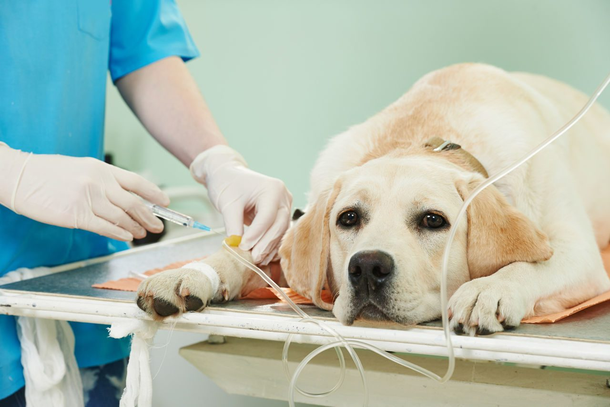

Кормление
Главная ошибка, которую совершает большинство владельцев собак, — кормление домашней едой. Еще хуже, когда питомца угощают лакомствами, которые человек считает вкусными: сахар, шоколад, колбаса. Лучшее питание для животного — специализированный корм и лакомства. И к ним собаку стоит приучать с детства.
Ветеринарный контроль и гигиена
Помимо сбалансированного питания и физической активности, здоровье собаки зависит и от своевременного посещения ветеринарного врача. Животному необходим ветеринарный паспорт, в котором должны быть отмечены все прививки. Кроме того, рекомендуется один раз в полгода посещать клинику для планового осмотра.
Выгул
Выгуливать собаку нужно дважды в день, как минимум — утром и вечером, особенно если речь идет о крупных породах. В связи с развитой мускулатурой им требуется большая физическая нагрузка, а значит, и прогулки должны быть дольше. Маленькие собачки, наоборот, не требуют многочасовых выгулов. Обычно после 5–10 минут они сами просятся домой.